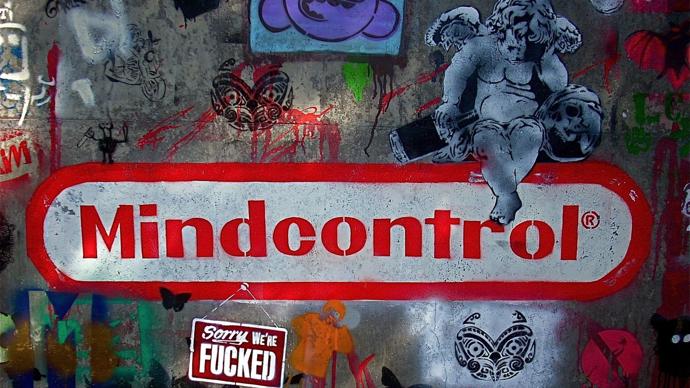

Tema 9: Identidad de Marca

¿Qué es la Identidad de Marca?
Identidad de marca es en términos generales los rasgos y características que definen los valores, misión y visión de tu marca como artista. Los diseños más representativos, el estilo gráfico usado, las temáticas más importantes a ejecutar, colores y símbolos que forman parte de tu arte hacen parte de una identidad de marca.
El objetivo de aplicar estos elementos visuales, físicos o temáticos es para lograr dos elementos importantes:
• Que permita generar una conexión con los usuarios o consumidores
• Que permita generar una “experiencia única” que te haga sobresalir o diferenciarte de otros.
Los beneficios de generar una identidad de marca usualmente se muestran con el tiempo, pero generalmente son:
• Vinculación con el seguidor, usuario o consumidor de tus obras: Si puedes hacer una conexión con tu público objetivo, eso hará que sigan buscando tu arte, lo compartan con otras personas, y permita que seas más conocido. Debido a que el arte urbano es usualmente un arte visible para todos, se vuelve también una forma de ganar renombre cuando las personas son capaces de identificar tus piezas solo con una mirada.
• Segmentación de Mercado: Aunque al arte urbano es usualmente para “todos”, eso no significa que todas las personas entenderán o apreciaran tus obras. Usualmente es importante saber para qué grupo de personas haces tú arte, o al menos conocer a qué tipo de población te diriges para que el mensaje que quieras dar con tus obras sean más fáciles de entender. No es lo mismo hacer una obra de arte cuyo mensaje está dirigido a los jóvenes de una ciudad y que fácilmente puedan entender, que hacer un mensaje que pueda ser entendido por cualquier persona que pueda verlo, y ya que el arte urbano es usualmente enfocado mucho en los elementos sociales de su espacio, es importante tener en cuenta que clase de mensaje quiere darse, y para quien.
• Consistencia: Es mucho más eficiente que las personas puedan identificarte si tu estilo y tipo de obras son consistentes la una con la otra, un artista que siempre hace piezas con índole político será conocido en espacios donde dicho tema es tocado, pero un artista que hace de todos los temas puede o ser conocido en todos si es lo suficientemente influyente, o no ser conocido en ninguno si sus obras no son consistentes y es difícil identificar que ha hecho.
• Valor de marca: Una identidad de marca es esencialmente un activo valioso y es una herramienta de auto-marketing importante para un artista. Las obras son las que hacen al artista, y si ese artista tiene una identidad de marca bien definida, su trabajo será mucho más eficiente.
.Imagen del artista urbano
Para un artista urbano, es importante generar una identidad que sea única y representativa. Para poder sobresalir es necesario que el artista cumpla con algunas características básicas que puedan hacer que sea reconocible:
Estilo personal: se necesita crear un estilo propio, que sobresalga de los demás y que permita identificar al artista, para ello es necesario tener “elementos representativos” en sus propias piezas, estás pueden ser desde un estilo especifico de tipografía, un estilo de ilustración único, una marca o sello que lo identifique, etc.
Tipo de mensaje: el arte urbano y el grafiti siempre han sobresalido por su papel como critica a la sociedad, los más famosos artistas urbanos siempre se han caracterizado por el tipo de critica que hacen en su contexto y como sus obras reflejan su inconformidad, sentimientos o pensamientos mediante el arte.
Arte como herramienta: Un factor importante es como el artista urbano hace uso del arte urbano y el grafiti para dar su mensaje, que no quede solo como una ilustración en una pared que muestre su inconformidad, sino que busque, mediante sus críticas, comentarios y estrategias usar al arte urbano como una herramienta para el cambio. Algunos ejemplos de esto pueden ser observados en los próximos videos.